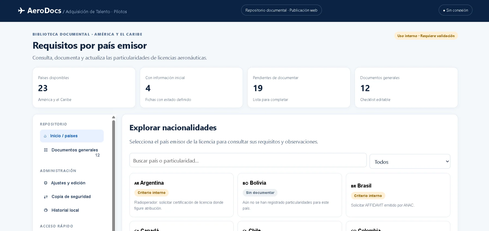

REPOSITORIO DIGITALCopa Airlines · Talento / Pilotos
AeroDocs — Requisitos aeronáuticos por país
Interfaz para centralizar particularidades documentales de licencias aeronáuticas. Incluye exploración por país, búsqueda, filtros, estados de documentación y una sección de administración.
Repositorio · Herramienta de consulta